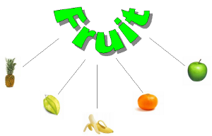
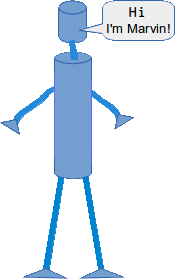

Object-Oriented Programming
General Introduction

Though Python is an object-oriented language without fuss or quibble, we have
so far intentionally avoided the treatment of object-oriented programming (OOP)
in the previous chapters of our Python tutorial. We skipped OOP, because
we are convinced, that it is easier and more fun to start learning Python
without having to know about all the details of object-oriented programming.
But even though we have avoided OOP, it is nevertheless present in the
exercises and examples of our course. We used objects and methods from classes
without knowing properly about their existence. In this chapter, we are giving a
proper introduction to the object-oriented approach of Python. OOP is one of
the most powerful tools of Python, but nevertheless you don't have to use it,
i.e. you can write powerful and efficient programs without it as well.
Though many computer scientists and programmers consider OOP to be a modern
programming paradigm, the roots go back to 1960s. The first programming language
to use objects was Simula 67. As the name implies, Simula 67 was introduced in
the year 1967. A major breakthrough for object-oriented programming came with
the programming language Smalltalk in the 1970s.
You will learn to know the four major principles of object-orientation and the
way Python deals with them in the next section of this tutorial on object-oriented
programming:
- Encapsulation
- Data Abstraction
- Polymorphism
- Inheritance
Before we start with the section on the way OOP is used in Python, we want to give you a general idea about object-oriented programming. For this purpose, we would like to draw your attention to a public library. Let's think about a huge one, like the "British Library" in London or the "New York Public Library" in New York. If it helps, you can imagine the libraries in Paris, Berlin, Ottawa or Toronto1 as well. Each of these contain an organized collection of books, periodicals, newspapers, audiobooks, films and so on.
Generally, there are two opposed ways of keeping the stock in a library. You can use a "closed access" method, that is the stock is not displayed on open shelves. In this system, trained staff brings the books and other publications to the users on demand. Another way of running a library is open-access shelving, also known as "open shelves". "Open" means open to all the users of the library not only specially trained staff. In this case the books are openly displayed. Imperative languages like C could be seen as open-access shelving libraries. The user can do everything. It's up to the user to find the books and to put them back at the right shelf. Even though this is great for the user, it might lead to serious problems in the long run. For example some books will be misplaced, so it's hard to find them again. As you may have guessed already, "closed access" can be compared to object oriented programming. The analogy can be seen like this: The books and other publications, which a library offers, are like the data in an object-oriented program. Access to the books is restricted like access to the data is restricted in OOP. Getting or returning a book is only possible via the stuff. The stuff functions like the methods in OOP, which control the access to the data. So, the data, - often called attributes, - in such a program can be seen as being hidden and protected by a shell, and it can only be accessed by special functions, usually called methods in the OOP context. Putting the data behind a "shell" is called Encapsulation.
So a library can be regarded as a class and a book is an instance or an object of this class. Generally speaking, an object is defined by a class. A class is a formal description of how an object is designed, i.e. which attributes and methods it has. These objects are called instances as well. The expressions are in most cases used synonymously. A class should not be confused with an object.
OOP in Python
First-class Everything
Even though we haven't talked about classes and object orientation in previous chapters, we have worked with classes all the time. In fact, everything is a class in Python. Guido van Rossum has designed the language according to the principle "first-class everything". He wrote: "One of my goals for Python was to make it so that all objects were "first class." By this, I meant that I wanted all objects that could be named in the language (e.g., integers, strings, functions, classes, modules, methods, etc.) to have equal status. That is, they can be assigned to variables, placed in lists, stored in dictionaries, passed as arguments, and so forth." (Blog, The History of Python, February 27, 2009) This means that "everything" is treated the same way, everything is a class: functions and methods are values just like lists, integers or floats. Each of these are instances of their corresponding classes.
>>> x = 42 >>> type(x) <class 'int'> >>> y = 4.34 >>> type(x) <class 'int'> >>> def f(x): ... return x + 1 ... >>> type(f) <class 'function'> >>> import math >>> type(math) <class 'module'> >>>One of the many integrated classes in Python is the list class, which we have quite often used in our exercises and examples. The list class provides a wealth of methods to build lists, to access and change elements, or to remove elements:
>>> x = [3,6,9] >>> y = [45,"abc"] >>> print(x[1]) 6 >>> x[1] = 99 >>> x.append(42) >>> last = y.pop() >>> print(last) abc >>>The variables x and y of the previous example denote two instances of the list class. In simplified terms we have said so far, that "x and y are lists". We will use the terms "object" and "instance" synonymously in the following chapters, as it is often done.2
pop and append of the previous example are methods of the list class. pop returns the most upper (or you might think of it as the "leftest") element of the list and removes this element from the list. We don't know how Python has implemented links internally. We don't need this information either, because the list class provides us with all the necessary methods to access the data indirectly. This means that the encapsulation details are encapsulated. We will learn about encapsulation later.
A Minimal Class in Python
We will design and use a robot class in Python as an example to demonstrate the most important terms and ideas of object orientation. We will start with the simplest class in Python.
class Robot:
pass
We can realize the fundamental syntactical structure of a class in Python:
A class consists of two parts: the header and the body. The header usually
consists of just one line of code. It begins with the keyword "class" followed
by a blank and an arbitrary name for the class. The class name is "Robot" in
our case. The class name is followed by a listing of other class names, which
are classes from which the defined class inherits from. These classes are
called superclasses, base classes or sometimes parent classes. If you look at
our example, you will see, that this listing of superclasses is not obligatory.
The body of a class consists of an indented block of statements. In our case a single statement, the "pass" statement.
It's hard to believe, especially for C++ or Java programmers, but we have already defined a complete class with just three words and two lines of code. We are capable of using this class as well:
class Robot:
pass
if __name__ == "__main__":
x = Robot()
y = Robot()
y2 = y
print(y == y2)
print(y == x)
We have created two different robots x and y in our example. Besides this, we have created a reference y2 to y, i.e. y2 is an alias name for y. The output of this example program looks like this:
True False
Attributes
Those who have learned already another object-oriented language, will have realized that the terms attributes and properties are usually used synonymously. It may even be used in the definition of an attribute, like Wikipedia does: "In computing, an attribute is a specification that defines a property of an object, element, or file. It may also refer to or set the specific value for a given instance of such."Even in normal English usage the words "attribute" and "property" can be used in some cases as synonyms. Both can have the meaning "An attribute, feature, quality, or characteristic of something or someone". Usually an "attribute" is used to denote a specific ability or characteristic which something or someone has, like black hair, no hair, or a quick perception, or "her quickness to grasp new tasks". So, think a while about your outstanding attributes. What about your "outstanding properties"? Great, if one of your strong points is your ability to quickly understand and adapt to new situations! Otherwise, you would not learn Python!
Let's get back to Python: We will learn later, that properties and attributes are essentially different things in Python. This subsection of our tutorial is about attributes in Python. So far our robots have no attributes. Not even a name, like it is customary for ordinary robots, isn't it? So, let's implement a name attribute. "type designation", "build year" and so on are easily conceivable as further attributes as well. 3
Attributes are created inside of a class definition, as we will soon learn. We can dynamically create arbitrary new attributes for existing instances of a class. We do this by joining an arbitrary name to the instance name, separated by a dot ".". In the following example, we demonstrate this by created an attribute for the name and the build year:
>>> class Robot: ... pass ... >>> x = Robot() >>> y = Robot() >>> >>> x.name = "Marvin" >>> x.build_year = "1979" >>> >>> y.name = "Caliban" >>> y.build_year = "1993" >>> >>> print(x.name) Marvin >>> print(y.build_year) 1993 >>>
As we have said before: This is not the way to properly create instance attributes. We introduced this example, because we think, that it may help to make the following explanations easier to understand.
If you want to know, what's happening internally: The instances possess dictionaries __dict__, which they use to store their attributes and their corresponding values:
>>> x.__dict__
{'name': 'Marvin', 'build_year': '1979'}
>>> y.__dict__
{'name': 'Caliban', 'build_year': '1993'}
Attributes can be bound to class names as well. In this case, each instance will possess this name as well. Watch out, what happens, if you assign the same name to an instance:
>>> class Robot: ... pass ... >>> Robot.number = 0 >>> x = Robot() >>> x.number 0 >>> y = Robot() >>> y.number 0 >>> y.number = 42 >>> Robot.number 0 >>> y.number 42 >>> x.number 0 >>>
If you try to access a non-existing attribute, you will raise an AttributeError:
>>> x.energy Traceback (most recent call last): File "<stdin>", line 1, inBy using the function getattr, you can prevent this exception, if you provide a default value as the third argument:AttributeError: 'Robot' object has no attribute 'energy' >>>
>>> getattr(x, 'energy', 100) 100 >>>Binding attributes to objects is a general concept in Python. Even function names can have attributes. You can bind an attribute to a function name in the same way, we did so far:
>>> def f(x): ... return 42 ... >>> f.x = 42 >>> print(f.x) 42 >>>
This can be used as a replacement for static variables in functions, which are not possible in Python. We use a counter attribute in the following example:
def f(x):
f.counter = getattr(f, "counter", 0) + 1
return "Monty Python"
for i in range(10):
f(i)
print(f.counter)
As we have already mentioned, we do not create instance attributes like this. To properly create instances we need methods. You will learn in the following subsection of our tutorial, how you can define methods.
Methods

We want to demonstrate now, how we can define methods in classes. To this purpose, we will rewrite our Robot class with a method SayHello. Before we do this, we want to clarify the difference between functions and methods. A method differs from a function only in two aspects:
- It belongs to a class and it is defined within a class
- The first parameter in the definition of a method has to be a reference to the instance, which called the method. This parameter is usually called "self".
Most object-oriented programming languages pass the reference to the object (self) as a hidden parameter to the methods.
This is the code for our improved robots, capable of saying "hello":
class Robot:
def SayHello(self):
print("Hello")
if __name__ == "__main__":
x = Robot()
x.SayHello()
You might wonder, that the parameter self seems to appear only in the definition of the method
"SayHello". Ostensibly, the method is called without any parameter. This doesn't look right, if
you think about the way we dealt with functions. We always had to use the same amount of parameters
in a function call than we had in the definition. But if you have a closer look at the code, you
will notice the instance variable name "x" before the ".". This is what makes the crucial difference:
It is, as if we had called the method with "SayHello(x)" instead of with "x.SayHello()". On the other
hand, this makes clear, that self will be a reference to x!
To clarify it even further: We could have called the method with "Robot.SayHello(x)". As this is neither handy nor reflects practise in OOP, we can use "x.SayHello()" as an "abbreviated" form, i.e. Python automatically binds it to the instance name.
For a Class C, an instance x of C and a method m of C the following three method calls are equivalent:
- type(x).m(x, ...)
- C.m(x, ...)
- x.m(...)
Instance Variables
Our robots shall be even friendlier. They should not only say "hello", but should introduce themselves with their name as well. To this purpose we will change our SayHello method. It will say, "Hello, my name is Marvin", if the robot is called "Marvin" for example. This brings us back to the instance variables, because we need an instance variable to store the name of the robot.
class Robot:
def SayHello(self):
print("Hello, I'm " + self.name)
if __name__ == "__main__":
x = Robot()
x.name = "Marvin"
x.SayHello()
One improvement to the approach above is to introduce a method SetName():
class Robot:
def SayHello(self):
print("Hello, I'm " + self.name)
def SetName(self, name):
self.name = name
if __name__ == "__main__":
x = Robot()
x.SetName("Marvin")
x.SayHello()
Before you proceed with the following text, you may mull over the previous example for
awhile, if you find something, you may not like!
There is more than one thing about this code, which may disturb you, but the essential problem at the moment is the fact, that we create a robot and that after the creation, we shouldn't forget about naming it! If we forget it, SayHello will raise an error.
We need a mechanism to initialize an instance right after its creation. This is the __init__-method, which we cover in the next section.
The __init__ Method
We want to define the attributes of an instances right after its creation. __init__ is a method which is immediately and automatically called after an instance has been created. This name is fixed and it is not possible to chose another name. __init__ is one of the so-called magic methods, of which we will get to know some more later. The __init__ method is used to initialize an instance. There is no explicit constructor or destructor method in Python, as they are known in C++ and Java. The __init__ method can be anywhere in a class definition, but it is usually the first method of a class, i.e. it follows right after the class header.
>>> class A:
... def __init__(self):
... print("__init__ has been executed!")
...
>>> x = A()
__init__ has been executed!
>>>
We add an __init__-method to our robot class:
class Robot:
def __init__(self, name):
self.name = name
def SayHello(self):
print("Hello, I'm " + self.name)
def SetName(self, name):
self.name = name
if __name__ == "__main__":
x = Robot("Marvin")
x.SayHello()
If we instantiate an instance of the Robot class, we have to add the name. If we don't do this,
we will get an error. Let's assume the program is stored in the file robot_class3c.py:
>>> from robot_class3c import Robot
>>> x = Robot("Marvin")
>>> x.SayHello()
Hello, I'm Marvin
>>> y = Robot()
Traceback (most recent call last):
File "<stdin>", line 1, in <module>
TypeError: __init__() takes exactly 2 arguments (1 given)
>>>
Data Abstraction, Data Encapsulation, and Information Hiding
Definitions of Terms
 Data Abstraction, Data Encapsulation and Information Hiding are often synonymously
used in books and tutorials on OOP. But there is a difference.
Encapsulation is seen as the bundling of data with the methods that operate on that data.
Information hiding on the other hand is the principle, that some internal information or data
is "hidden", so that it can't be accidentally changed. Data encapsulation via methods doesn't
necessarily mean, that the data is hidden. You might be capable of accessing and seeing the
data anyway, but using the methods is recommended. Finally, data abstraction is present, if both
data hiding and data encapsulation is used. This means data abstraction is the broader term:
Data Abstraction, Data Encapsulation and Information Hiding are often synonymously
used in books and tutorials on OOP. But there is a difference.
Encapsulation is seen as the bundling of data with the methods that operate on that data.
Information hiding on the other hand is the principle, that some internal information or data
is "hidden", so that it can't be accidentally changed. Data encapsulation via methods doesn't
necessarily mean, that the data is hidden. You might be capable of accessing and seeing the
data anyway, but using the methods is recommended. Finally, data abstraction is present, if both
data hiding and data encapsulation is used. This means data abstraction is the broader term:
Data Abstraction = Data Encapsulation + Data Hiding
Encapsulation is often accomplished by providing two kinds of methods for attributes: The methods for retrieving or accessing the values of attributes are called getter methods. Getter methods do not change the values of attributes, they just return the values. The methods used for changing the values of attributes are called setter methods.
We have already encountered a setter method on our previous version of our robot class. The method is SetName. After having read the paragraph on data encapsulation, you will most probably miss a getter method, e.g. GetName for retrieving the value. We could only access the name directly with "x.name" for an instance x.
The following listing shows an improved robot class with getter and setter methods for the attributes "name" and "build_year":
class Robot:
def __init__(self, name, build_year):
self.name = name
self.build_year = build_year
def SayHello(self):
print("Hi, I'm " + self.name)
def SetName(self, name):
self.name = name
def GetName(self):
return self.name
def SetBuildYear(self, build_year):
self.build_year = build_year
def GetBuildYear(self):
return str(self.build_year)
if __name__ == "__main__":
x = Robot("Marvin", 1979)
y = Robot("Caliban", 1993)
for rob in [x, y]:
rob.SayHello()
print("I was built in the year " + rob.GetBuildYear() + "!")
If we have saved the program as robot4.py and start it with "python3 robot4.py", we will get the following results:
$ python3 robot_class4.py Hi, I'm Marvin I was built in the year 1979! Hi, I'm Caliban I was built in the year 1993!
__str__- and __repr__-Methods
We will have a short break in our treatise on data abstraction for a quick side-trip. We want to introduce two important magic methods "__str__" and "__repr__", which we will need in future examples. In the course of this tutorial, we have already encountered the __str__ method. We had seen, that we can depict various data as string by using the str function, which uses "magically" the internal __str__ method of the corresponding data type. __repr__is similar. It also produces a string representation.
>>> l = ["Python", "Java", "C++", "Perl"]
>>> print(l)
['Python', 'Java', 'C++', 'Perl']
>>> str(l)
"['Python', 'Java', 'C++', 'Perl']"
>>> repr(l)
"['Python', 'Java', 'C++', 'Perl']"
>>> d = {"a":3497, "b":8011, "c":8300}
>>> print(d)
{'a': 3497, 'c': 8300, 'b': 8011}
>>> str(d)
"{'a': 3497, 'c': 8300, 'b': 8011}"
>>> repr(d)
"{'a': 3497, 'c': 8300, 'b': 8011}"
>>> x = 587.78
>>> str(x)
'587.78'
>>> repr(x)
'587.78'
>>>
If you apply str or repr to an object, Python is looking for a corresponding method __str__ or __repr__ in the class definition of the object. If the method does exist, it will be called.
In the following example, we define a class A, having neither a __str__ nor a __repr__ method. We want to see, what happens, if we use print directly on an instance of this class, or if we apply str or repr to this instance:
>>> class A: ... pass ... >>> a = A() >>> print(a) <__main__.A object at 0xb720a64c> >>> print(repr(a)) <__main__.A object at 0xb720a64c> >>> print(str(a)) <__main__.A object at 0xb720a64c> >>> a <__main__.A object at 0xb720a64c> >>>
As both methods are not available, Python uses the default output for our object "a".
If a class has a __str__ method, the method will be used for an instance x of that class, if either the function str is applied to it or if it is used in a print function. __str__ will not be used, if repr is called, or if we try to output the value directly in an interactive Python shell:
>>> class A: ... def __str__(self): ... return "42" ... >>> a = A() >>> print(repr(a)) <__main__.A object at 0xb720a4cc> >>> print(str(a)) 42 >>> a <__main__.A object at 0xb720a4cc>
Otherwise, if a class has only the __repr__ method and no __str__ method, __repr__ will be applied in the situations, where __str__would be applied, if it were available:
>>> class A: ... def __repr__(self): ... return "42" ... >>> a = A() >>> print(repr(a)) 42 >>> print(str(a)) 42 >>> a 42A frequently asked question is when to use __repr__ annd when __str__. __str__ is always the right choice, if the output should be for the end user or in other words, if it should be nicely printed. __repr__ on the other hand is used for the internal representation of an object. The output of __repr__ should be - if feasible - a string which can be parsed by the python interpreter. The result of this parsing is in an equal object.
This means, that the following should be true for an object "o":
o == eval(repr(o))
This is shown in the following interactive Python session:
>>> l = [3,8,9] >>> s = repr(l) >>> s '[3, 8, 9]' >>> l == eval(s) True >>> l == eval(str(l)) True >>>We show in the following example with the datetime module, that eval can only be applied on the strings created by repr:
>>> import datetime
>>> today = datetime.datetime.now()
>>> str_s = str(today)
>>> eval(str_s)
Traceback (most recent call last):
File "<stdin>", line 1, in <module>
File "<string>", line 1
2014-01-26 17:35:39.215144
^
SyntaxError: invalid token
>>> repr_s = repr(today)
>>> t = eval(repr_s)
>>> type(t)
<class 'datetime.datetime'>
>>>
We can see, that eval(repr_s) returns again a datetime.datetime object. The String created by str can't be turned into a datetime.datetime object by parsing it.
We want to extend our robot class with a repr method. We dropped the other methods to keep this example simple:
class Robot:
def __init__(self, name, build_year):
self.name = name
self.build_year = build_year
def __repr__(self):
return "Robot(\"" + self.name + "\"," + str(self.build_year) + ")"
if __name__ == "__main__":
x = Robot("Marvin", 1979)
x_str = str(x)
print(x_str)
print("Type of x_str: ", type(x_str))
new = eval(x_str)
print(new)
print("Type of new:", type(new))
x_str has the value Robot("Marvin",1979). eval(x_str) converts it again into a Robot instance.
The script returns the following output:
$ python3 robot_class5.py
Robot("Marvin",1979)
Type of x_str: <class 'str'>
Robot("Marvin",1979)
Type of new: <class '__main__.Robot'>
Now it's time to extend our class with a user friendly __str__ method:
class Robot:
def __init__(self, name, build_year):
self.name = name
self.build_year = build_year
def __repr__(self):
return "Robot(\"" + self.name + "\"," + str(self.build_year) + ")"
def __str__(self):
return "Name: " + self.name + ", Build Year: " + str(self.build_year)
if __name__ == "__main__":
x = Robot("Marvin", 1979)
x_str = str(x)
print(x_str)
print("Type of x_str: ", type(x_str))
new = eval(x_str)
print(new)
print("Type of new:", type(new))
When we start this program, we can see, that it is not possible to convert our string x_str, created via str(x), into a Robot object anymore.
$ python3 robot_class6.py
Name: Marvin, Build Year: 1979
Type of x_str: <class 'str'>
Traceback (most recent call last):
File "robot_class6.py", line 19, in <module>
new = eval(x_str)
File "<string>", line 1
Name: Marvin, Build Year: 1979
^
SyntaxError: invalid syntax
We show in the following program, that x_repr can still be turned into a Robot object:
class Robot:
def __init__(self, name, build_year):
self.name = name
self.build_year = build_year
def __repr__(self):
return "Robot(\"" + self.name + "\"," + str(self.build_year) + ")"
def __str__(self):
return "Name: " + self.name + ", Build Year: " + str(self.build_year)
if __name__ == "__main__":
x = Robot("Marvin", 1979)
x_repr = repr(x)
print(x_repr, type(x_repr))
new = eval(x_repr)
print(new)
print("Type of new:", type(new))
The output looks like this:
$ python3 robot_class6b.py
Robot("Marvin",1979) <class 'str'>
Name: Marvin, Build Year: 1979
Type of new: <class '__main__.Robot'>
Public- Protected- and Private Attributes
Who doesn't know those trigger-happy farmers from films. Shooting as soon as somebody enters their property. This "somebody" has of course neglected the no trespassing sign, indicating that the land is private property. Maybe he hasn't seen the sign, maybe the sign is hard to be seen? Imagine a jogger, running the same course five times a week for more than a year, but than he receives a $50 fine for trespassing in the Winchester Fells. Trespassing is a criminal offence in Massachusetts. He was innocent anyway, because the signage was inadequate in the area.4Even though no trespassing signs and strict laws do protect the private property, some surround their property with fences to keep off unwanted "visitors". Should the fence keep the dog in the yard or the burglar in the street? Choose your fence: Wood panel fencing, post-and-rail fencing, chain-link fencing with or without barbed wire and so on.
We have a similar situation in the design of object-oriented programming languages. The first decision to take is how to protect the data which should be private. The second decision is what to do if trespassing, i.e. accessing or changing private data, occurs. Of course, the private data may be protected in a way, that it can't be accessed under no circumstances. This is hardly possible in practice, as we no from the old saying "Where there's a will, there's a way"!
Some owners allow a restricted access to their property. Joggers or hikers may find signs like "Enter at your own risk". A third kind of property might be public property like streets or parks, where it is perfectly legal to be.
We have the same classification again in object-oriented programming:
- Private attributes should only be used by the owner, i.e. inside of the class definition itself.
- Protected (restricted) Attributes may be used, but at your own risk. Essentially, this means, that they should only be used under certain conditions.
- Public Attributes can and should be freely used.
Python uses a special naming scheme for attributes to control the accessibility of the attributes. So far, we have used attribute names, which can be freely used inside or outside of a class definition, as we have seen. This corresponds to public attributes of course.
There are two ways to restrict the access to class attributes:
- First, we can prefix an attribute name with a leading underscore "_". This marks the attribute as protected. It tells users of the class not to use this attribute unless, somebody writes a subclass. We will learn about inheritance and subclassing in the next chapter of our tutorial.
- Second, we can prefix an attribute name with two leading underscores "__". The attribute is now inaccessible and invisible from outside. It's neither possible to read nor write to those attributes except inside of the class definition itself.5
To summarize the attribute types:
| Naming |
Type |
Meaning |
|---|---|---|
| name | Public |
These attributes can be freely used inside or outside of a class
definition. |
| _name | Protected |
Protected attributes should not be used outside of the class
definition, unless inside of a subclass definition.
|
| __name | Private |
This kind of attribute is inaccessible and invisible.
It's neither possible to read nor write to those attributes,
except inside of the class definition itself. |
We want to demonstrate the behaviour of these attribute types with an example class:
class A():
def __init__(self):
self.__priv = "I am private"
self._prot = "I am protected"
self.pub = "I am public"
We store this class (attribute_tests.py) and test its behaviour in the following interactive Python shell:
>>> from attribute_tests import A >>> x = A() >>> x.pub 'I am public' >>> x.pub = x.pub + " and my value can be changed" >>> x.pub 'I am public and my value can be changed' >>> x.prot Traceback (most recent call last): File "The error message is very interesting. One might have expected a message like "__priv is private". We get the message "AttributeError: 'A' object has no attribute '__priv'" instead, which looks like a "lie". There is such an attribute, but we are told that there isn't. This is perfect information hiding. Telling a user, that an attribute name is private, means that we make some information visible, i.e. the existence or non-existence of a private variable.", line 1, in AttributeError: 'A' object has no attribute 'prot' >>> x._prot 'I am protected' >>> x.__priv Traceback (most recent call last): File " ", line 1, in AttributeError: 'A' object has no attribute '__priv' >>>
Our next task consists in rewriting our Robot class. Though we have Getter and Setter methods for the name and the build_year, we can access the attributes directly as well, because we have defined them as public attributes. Data Encapsulation means, that we should only be able to access private attributes via getters and setters.
We have to replace each occurrence of self.name and self.build_year by self.__name and self.__build_year.
The listing of our revised class:
class Robot:
def __init__(self, name, build_year):
self.__name = name
self.__build_year = build_year
def SayHello(self):
print("Hi, I'm " + self.__name)
def SetName(self, name):
self.__name = name
def GetName(self):
return self.__name
def SetBuildYear(self, build_year):
self.__build_year = build_year
def GetBuildYear(self):
return str(self.__build_year)
def __repr__(self):
return "Robot(\"" + self.__name + "\"," + str(self.__build_year) + ")"
def __str__(self):
return "Name: " + self.__name + ", Build Year: " + str(self.__build_year)
if __name__ == "__main__":
x = Robot("Marvin", 1979)
y = Robot("Caliban", 1993)
for rob in [x, y]:
rob.SayHello()
print("I was built in the year " + rob.GetBuildYear() + "!")
The output is as expected:
$ python3 robot_class7.py Hi, I'm Marvin I was built in the year 1979! Hi, I'm Caliban I was built in the year 1993!
Every private attribute of our class has a getter and a setter. There are IDE for object-oriented programming languages, who automatically provide getters and setters for every private attribute as soon as it is created.
This may look like the following class:
class A():
def __init__(self, x, y):
self.__x = x
self.__y = y
def GetX(self):
return self.__x
def GetY(self):
return self.__y
def SetX(self, x):
self.__x = x
def SetY(self, y):
self.__y = y
There are at least two good reasons against such an approach. First of all not every private attribute needs to be accessed from outside. Second, we will create non-pythonic Code this way, as you will learn soon.
Destructor
What we said about constructors holds true for destructors as well. There is no "real" destructor, but something similar, i.e. the method __del__. It is called when the instance is about to be destroyed and if there is no other reference to this instance. If a base class has a __del__() method, the derived class's __del__() method, if any, must explicitly call it to ensure proper deletion of the base class part of the instance.The following script is an example with __init__ and __del__:
class Robot():
def __init__(self, name):
print(name + " has been created!")
def __del__(self):
print ("Robot has been destroyed")
if __name__ == "__main__":
x = Roboter("Tik-Tok")
y = Roboter("Jenkins")
z = x
print("Deleting x")
del x
print("Deleting z")
del z
del y
The output of the previous program:
$ python3 del_example.py Tik-Tok has been created! Jenkins has been created! Deleting x Deleting z Robot has been destroyed Robot has been destroyed
The usage of the __del__method is very problematic. If we change the previous code to personalize the deletion of a robot, we create an error:
class Robot():
def __init__(self, name):
print(name + " has been created!")
def __del__(self):
print (self.name + " says bye-bye!")
if __name__ == "__main__":
x = Robot("Tik-Tok")
y = Robot("Jenkins")
z = x
print("Deleting x")
del x
print("Deleting z")
del z
del y
We get the following output with error messages:
$ python3 del_example.py Tik-Tok has been created! Jenkins has been created! Deleting x Deleting z Exception AttributeError: "'Robot' object has no attribute 'name'" in <bound method Robot.__del__ of <__main__.Robot object at 0xb71da3cc>> ignored Exception AttributeError: "'Robot' object has no attribute 'name'" in <bound method Robot.__del__ of <__main__.Robot object at 0xb71da36c>> ignored
We are accessing an attribute which doesn't exist anymore. We will learn later, why this is the case.
Footnotes:
1The picture on the right side is taken in the Library of the Court of Appeal for Ontario, located downtown Toronto in historic Osgoode Hall 2
"Objects are Python's abstraction for data. All data in a Python program is represented by objects or by relations between objects. (In a sense, and in conformance to Von Neumann's model of a "stored program computer", code is also represented by objects.) Every object has an identity, a type and a value." (excerpt from the the official Python Language Reference)
3
"attribute" stems from the Latin verb "attribuere" which means "to associate with"
4
http://www.wickedlocal.com/x937072506/tJogger-ticketed-for-trespassing-in-the-Winchester-Fells-kicks-back
5 There is a way to access a private attribute directly. In our example, we can do it like this: x._Robot__build_year+
You shouldn't do this under any circumstances!